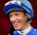

5-Reel 25-line Slots
The object of Frankie Dettori's Magic Seven is to obtain winning symbol combinations by spinning the reels.
To play the game:
- A wagering denomination (coin value) can be chosen by clicking the Click to Change denomination button in the lower left-hand corner of the screen.
- Line bets are chosen by clicking Bet per Line. Each click adds a coin to the line bet. When the maximum amount is reached (10 coins of the selected wagering denomination), clicking the button again resets the line bet to one coin.
- Paylines are chosen by clicking Lines. Each click activates a payline. When all paylines are activated, clicking the button again resets it to one active payline. Paylines can also be activated by using the numbered buttons on either side of the reels. Selecting a high payline includes all the lower ones too. For example, selecting payline 6 also activates paylines 1 through 5. Clicking Bet Max activates all paylines with the maximum bet per line and spins the reels.
- Total bet per game round = line bet X active paylines.
- Clicking Spin spins the reels with the current selection of lines and line bets. During the reel spins the Spin button changes intoStop. Clicking Stop ends the spin animation and immediately displays the spin result.
- Reels can also be spun using the Auto Start function. Clicking + or – above Auto Start selects the successive number of spins to be enabled. Clicking Auto Start spins the reels. The Auto Start button changes into Stop during the Auto Start mode of reelspin. The Auto Start mode ends when the reels have been spun the number of times determined by the player, or when the player clicks Stop.
- Wins are calculated according to the paytable. Line win = line bet X corresponding multiplier according to the paytable. Scatter win = total bet X corresponding multiplier according to the paytable. The paytable can be accessed via the Info page.
- On a given payline, only the highest payline winning combination pays while simultaneous winnings on different paylines are accumulated.
- In the case of a winning spin, the Win field displays the accumulating winnings. The Win ticker can be stopped by clicking anywhere on the screen to display the total win amount immediately.
- Payline wins and the total win are also displayed on the strip located at the bottom of the reels or the game window.
- A win activates the Gamble button which, when clicked, starts the Gamble feature. More information about the Gamble feature can be found below.
Info page:
- Clicking Info opens the reference screen describing different game components. Clicking the arrow buttons at the lower right-hand corner of the screen enables navigating between the different info screens.
- The Paytable screen shows all winning combinations. When opened after a winning spin, the winning symbol combinations (number of symbols and bet multiplier) are highlighted and blink.
- The Free Games Race screen describes the symbol combinations necessary to enter the Free Games Race feature and describes its rules.
- The Magic Seven Bonus screen describes the symbol combinations necessary to enter the Magic Seven Bonus game and describes its rules.
- The Gamble screen describes how to try doubling winnings by gambling with them and describes the doubling-up rules.
- Clicking Show Paylines on the Paytable page, opens a screen that illustrates all possible payline combinations. Clicking Hide Paylines closes this screen and returns to the Paytable page.
- Clicking Back exits the Info screen and returns to the game.
Paylines:
- Active paylines are represented by lines that appear over the reels. Paylines can be activated and their shape displayed by progressively clicking Lines.
- Only active paylines can register wins.
- There is a difference between the line bet and the total bet. The line bet shows how much is being bet on a single payline. The total bet shows how much is being bet in total on the game round. Payouts shown in the paytable are multiplied by the line bet.
The Scatter symbol is an exception to these rules. More information about the Scatter symbol can be found below.
About payouts:
- Payouts are listed on the Paytable screen. To find the possible win amount, the line bet must be multiplied by the payout.
- If two payline winning combinations occur on the same line, the higher of them is paid out. If more than one active payline has a winning combination, the winnings are accumulated.
- Winning combinations must start from the left most reel, and the symbols have to be consecutive.
The Scatter symbol is an exception to these rules. More information about the Scatter symbol can be found below.
Wild symbol
The Wild symbol in the game is the  symbol. It can stand for any other symbol, except Scatter and Bonus, to make the best possible winning combination. There is also a separate payout for two or more Wild symbols on an active payline, as seen in the Paytable. This is paid out instead of the regular symbol win if the win amount from Wilds is larger than the win from the regular symbols (by Wild standing in).
Scatter symbol
The Scatter symbols do not have to occur on any particular payline. If there are two or more Scatters in the spin results, the payout earned is multiplied by the total bet and added to payline winnings.
If three or more Scatter symbols appear anywhere on the reels simultaneously, the Free Games Race is triggered.
Bonus symbol
If the Bonus symbol appears on reels #1 and #5 simultaneously during main game, the Magic Seven Bonus is triggered.
Magic Seven Bonus
To start the Magic Seven Bonus round, click on Click to Start.
In the Magic Seven Bonus, the player picks spots on a racetrack, to win cash prizes. The random prizes offered during the Bonus round are multiples of the total bet of the spin that triggered the Bonus.
There are 20 spots altogether on the track for the player to choose from and every selection wins either a cash prize (from X1 to X5 times the total bet of the spin that triggered the bonus) or a trophy (a multiplier from X1 to X7 for the total Bonus win, which is the sum of the random cash prizes collected) until Collect is chosen (which also wins either a trophy or a cash prize) and the Bonus game is terminated. The maximum total amount that can be won from the Magic Seven Bonus can reach 280 times the total bet of the spin that triggered the feature.
The win multiplier is at X1 when the player enters the bonus. For each trophy found, the multiplier increases in steps of 1. When a trophy is found, a video is played in the middle of the racetrack, showing one of Frankie Dettori’s famous fantastic seven wins.
At the end of the Bonus game, a win screen displays your winnings. Click Continue to return to the regular slot reels.
The Magic Seven Bonus cannot be triggered during Free Games.
Free Games Race
3 or more Scatters anywhere on the reels trigger the Free Games Race.
To enter the Free Games Race, click on Click to Start.
The reels turn into a race track with three horses ready to race.
Click on Select to pick a horse and start the race. If your horse wins first place, you win 35 Free Games. If your horse wins second place, you win 15 Free Games. If your horse wins third place, you win 10 Free Games.
At the end of the race, click Continue and the Free Games begin automatically.
During the Free Games, the reels are spun automatically using the same number of lines and bets per line as on the spin that won the Free Games round. After each spin, the win is displayed in the Win field. The Free Games Win field shows the accumulated winnings from the current Free Games.
After all Free Games have been completed, a result board summarizes the winnings. Game win shows the winnings that were received from the spin that won the free games. Feature win shows the winnings that were received during the Free Games. Total win shows the aggregate winnings (Game Win and Feature Win added up).
Clicking Continue will return you to the main game. When returning to the main game, clicking anywhere on the screen stops the win ticker and displays the full prize.
If 3 or more Scatter symbols appear anywhere on the reels during Free Games, only a payout is won but more Free Games are not retriggered, nor is the Free Games race triggered during Free Games.
Free Game wins are added to the payline and Scatter wins that triggered the Free Games.
If the Free Games Race is triggered during the Auto Start mode, the feature begins after the player clicks on Click to Start. Then a horse should be selected to start the race and win Free Games. At the end of the race, click Continue to start the Free Games. When all Free Games have been played and the player clicks Continue on the screen summarizing the Free Games win, the Auto Start mode resumes.
Gamble
A win activates the Gamble button which, when clicked, starts the Gamble feature where you can bet the winnings from your last spin to try and increase them.
Your current winnings are shown in the Bank field. You can choose to bet these winnings (Double button) to double them. Double Toshows the amount that will be placed in the Bank, if you win.
You can also choose to bet only half your current winnings (Double Half button) and keep the other half in the Bank. Double Half Toshows the amount that will be placed in the Bank (includes the amount that remained in the Bank), if you win.
Bet will show your bet in the Gamble round.
If you do not want to bet, you can click Collect to add the winnings from the last spin to your balance and return to the main game. If you choose to bet, the dealer’s card is revealed on the left-hand side of the screen and you have to pick a card from the remaining face-down cards. If you pick a card with a higher ranking than the dealer’s card, you win. If your card is equal in ranking, the bet is returned. If your card is lower in ranking than the dealer’s card, you lose your bet and the Gamble feature ends.
With every win, you can bet again until the winnings in the Bank are equal to or greater than the Gamble feature limit. The limit is shown on the Info page that describes the Gamble feature.
Click Collect to add your winnings from the Bank to your balance and return to the main game.
Please note: The Gamble button is disabled during free spins and while the Auto Start is active.
Return to Player
The theoretical percentage return to player (RTP) is 95.99%.